La collection
Les 20 mosquées
Du VIIe siècle à nos jours, de Xi'an à Casablanca. Filtrez par pays, style architectural ou époque, ou recherchez librement.

Masjid al-Haram
La mosquée sacrée qui entoure la Kaaba, cœur spirituel de l'islam et plus grand sanctuaire du monde.

Masjid an-Nabawi
La Mosquée du Prophète à Médine, reconnaissable à son célèbre Dôme vert et à ses parasols géants.

Mosquée Al-Aqsa
Troisième lieu saint de l'islam, au cœur de l'esplanade des Mosquées de la vieille ville de Jérusalem.
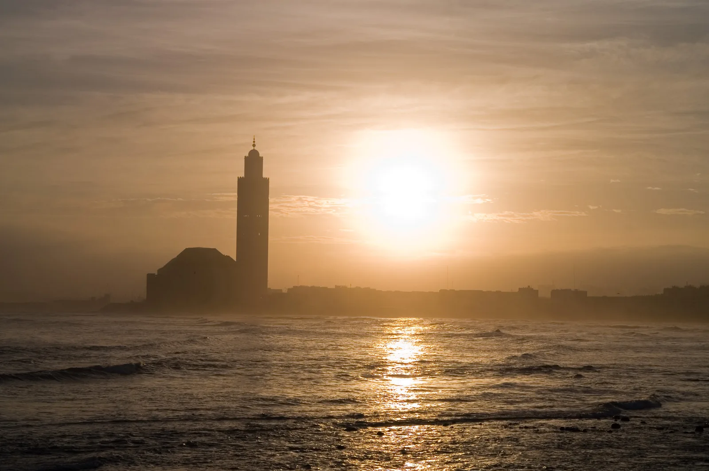
Mosquée Hassan II
Un géant posé sur l'Atlantique : minaret de 210 mètres, toit ouvrant et artisanat marocain à son sommet.
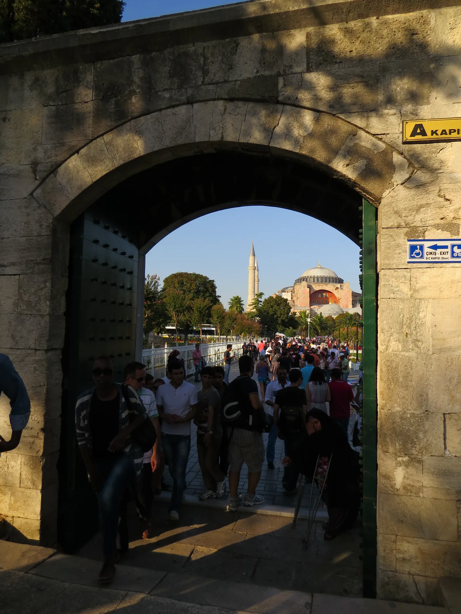
Mosquée bleue (Sultan Ahmed)
Six minarets, une cascade de coupoles et plus de 20 000 carreaux d'Iznik : l'icône d'Istanbul.
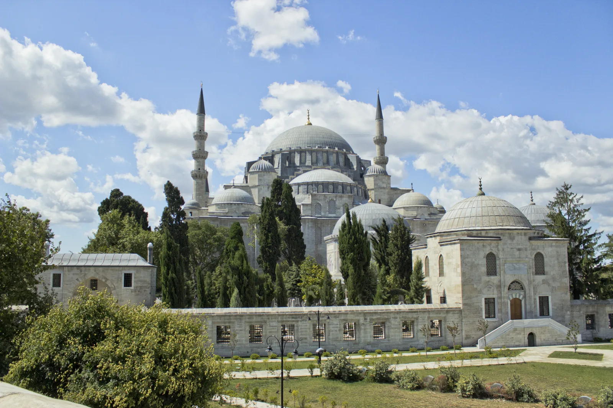
Mosquée Süleymaniye
Le chef-d'œuvre de Sinan dominant la Corne d'Or, dédié à Soliman le Magnifique.
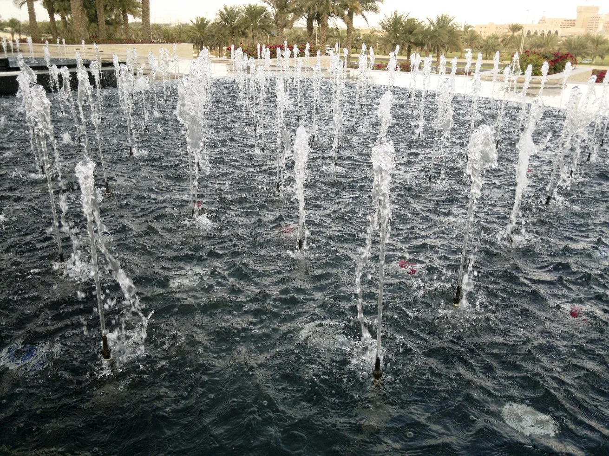
Mosquée Cheikh Zayed
82 coupoles de marbre blanc, le plus grand tapis noué main du monde et des lustres de cristal.
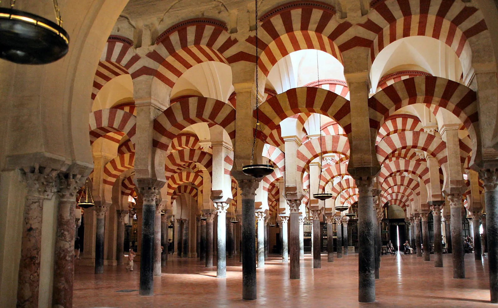
Mosquée-cathédrale de Cordoue
La forêt d'arcs bicolores d'al-Andalus, chef-d'œuvre omeyyade classé à l'UNESCO.
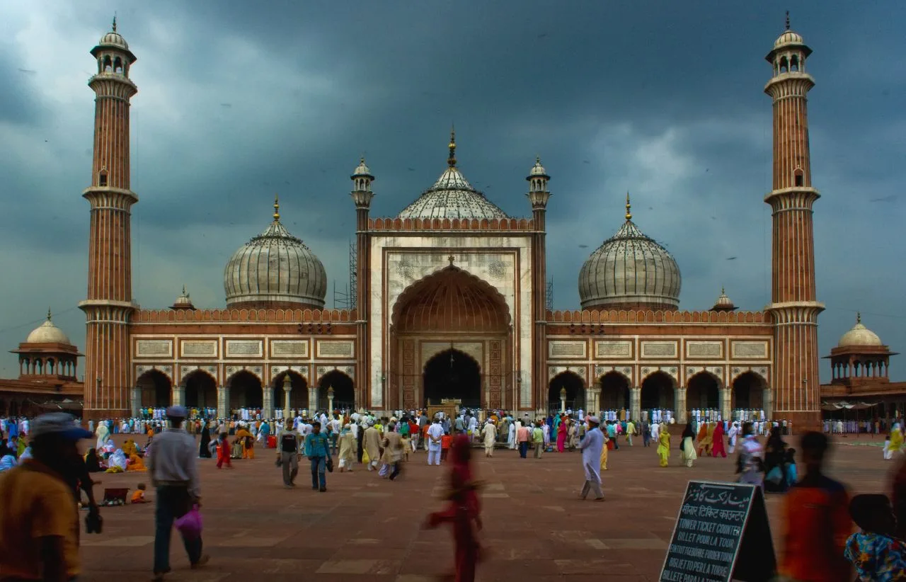
Jama Masjid
La grande mosquée de Shah Jahan : grès rouge, marbre blanc et l'une des plus vastes cours de l'Inde.
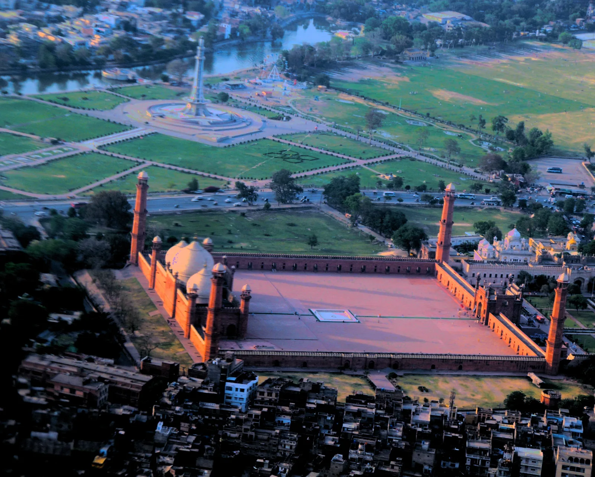
Mosquée Badshahi
La « mosquée impériale » de Lahore, colosse moghol de grès rouge resté deux siècles le plus grand du monde.
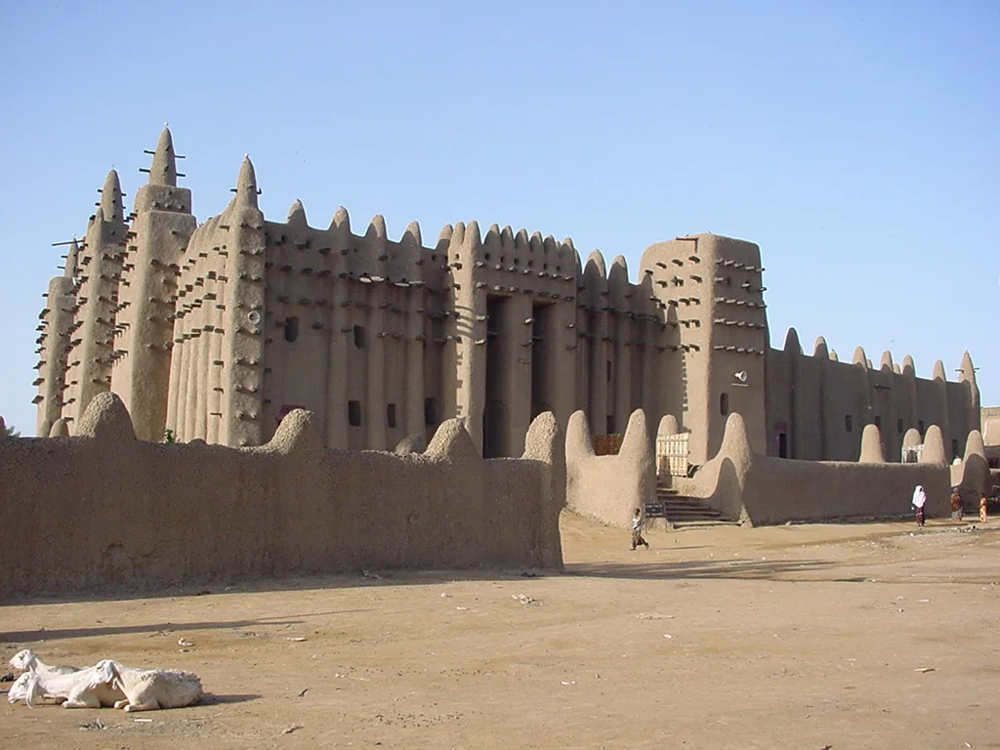
Grande Mosquée de Djenné
Le plus grand édifice en terre crue du monde, recrépi chaque année par toute la ville en fête.
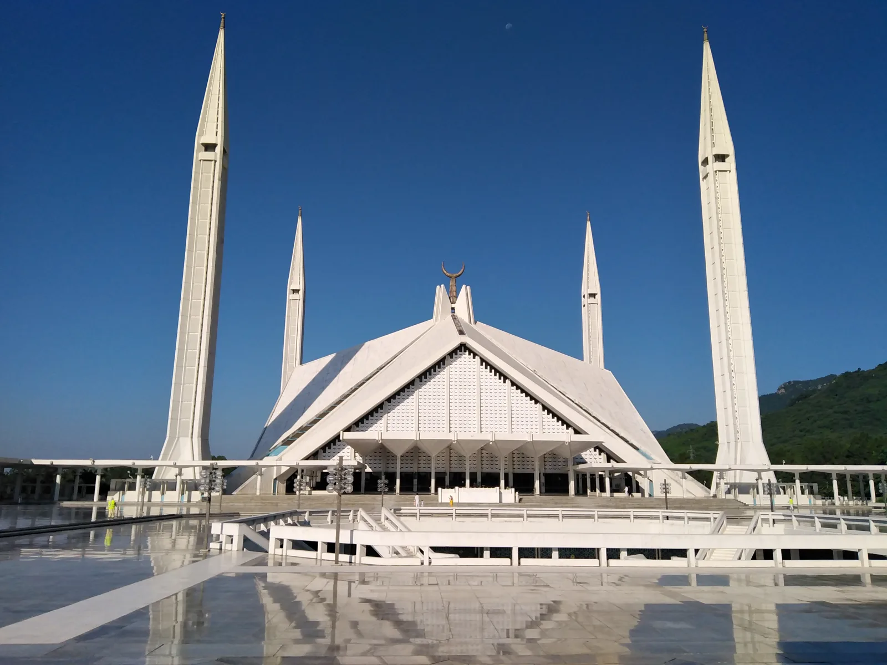
Mosquée Faisal
Une immense tente de béton blanc au pied des collines de Margalla, sans dôme ni arc.
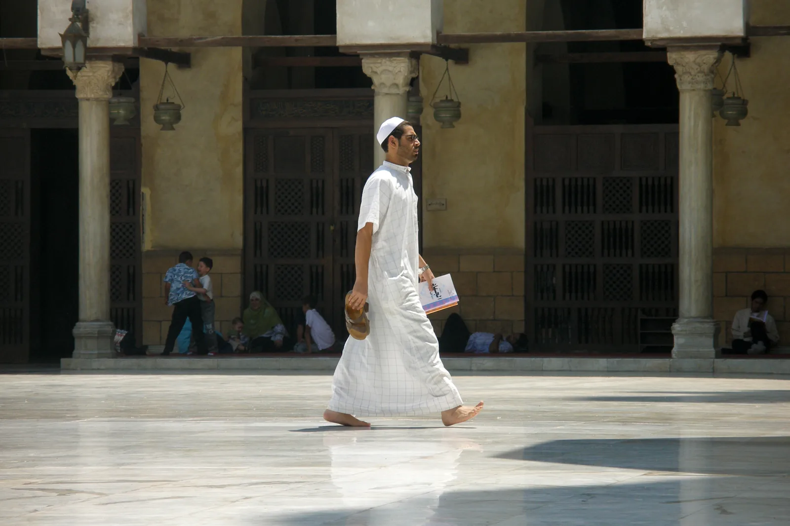
Mosquée Al-Azhar
Mosquée fatimide et université millénaire, phare intellectuel du monde sunnite depuis l'an 972.
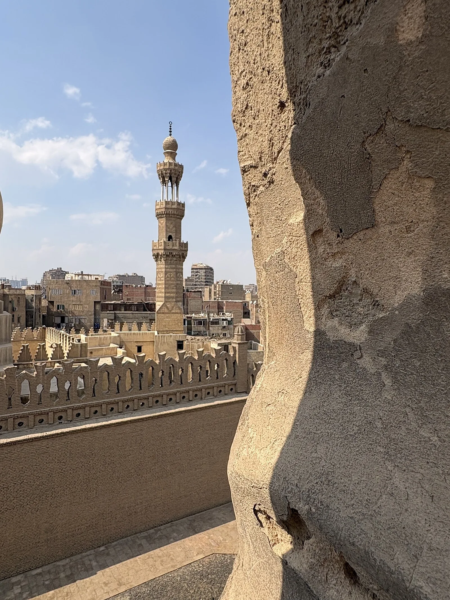
Mosquée Ibn Touloun
La doyenne du Caire, célèbre pour son minaret à escalier extérieur en spirale, unique en Égypte.

Grande Mosquée de Kairouan
Le plus ancien grand sanctuaire de l'Occident musulman, forteresse de foi aux 400 colonnes antiques.
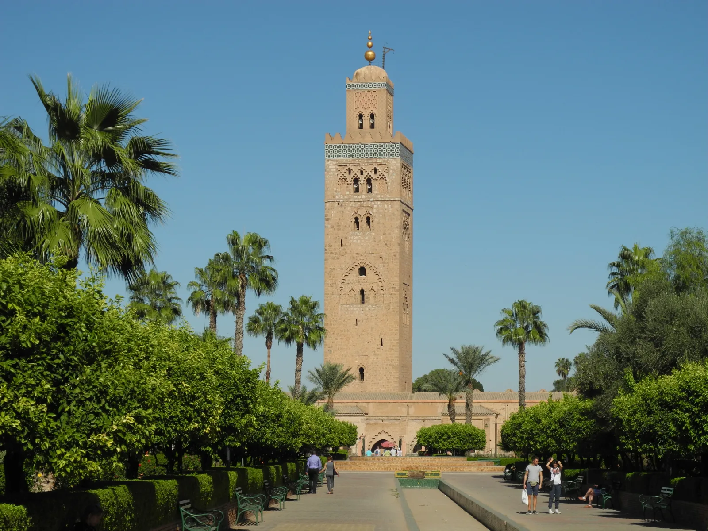
Mosquée Koutoubia
Le minaret-phare de Marrakech, modèle de la Giralda de Séville et de la tour Hassan de Rabat.

Mosquée Nasir al-Mulk
La « mosquée rose » de Chiraz, dont les vitraux transforment chaque matin la prière en kaléidoscope.

Mosquée Cheikh Lotfollah
Le joyau safavide de la place Naqsh-e Jahan : ni minaret, ni cour, mais le plus beau dôme d'Iran.
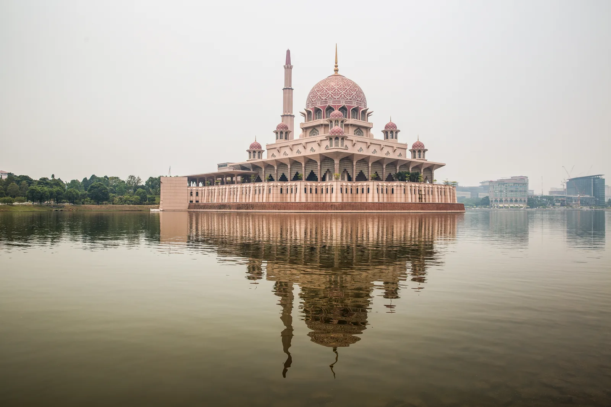
Mosquée Putra
La « mosquée rose » de granit posée sur le lac de Putrajaya, entre tradition persane et savoir-faire malais.
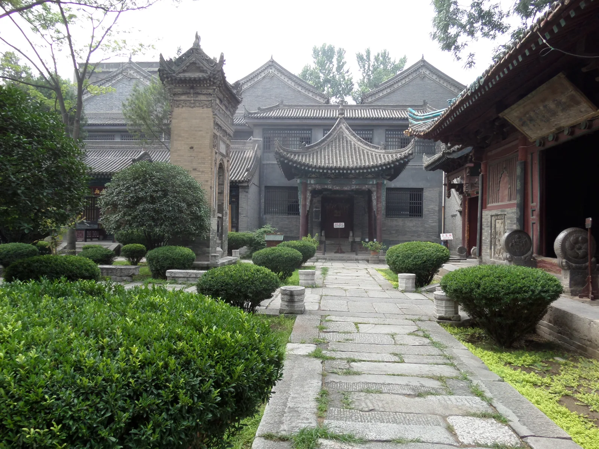
Grande Mosquée de Xi'an
Une mosquée sans dôme ni minaret : pavillons, pagode et jardins, chef-d'œuvre de l'islam chinois.